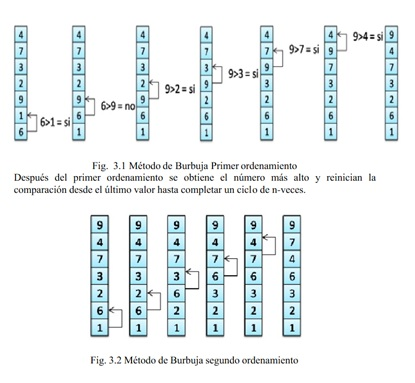

Método de Ordenamiento Burbuja (Bubble Sort en inglés)
Es un método simple de ordenamiento, el cual consiste en revisar cada elemento de la lista que va a ser ordenada con el siguiente, de esta manera el intercambia la posición si el orden no es el correcto; este método requiere revisar varias veces toda la lista hasta que no requiera hacer más cambios, lo cual quiere decir, que la lista esta ordenada.

MateUCE. El Método de Burbuja Monografia. Recuperado de: Scribd
Este método obtiene su nombre por la forma con la que suben por la lista los elementos durante el intercambio, ya que parecen pequeñas burbujas.
Es el método más simple o sencillo de implementar, para entender mejor este método les mostraré unos ejemplos de este tipo de ordenamientos.